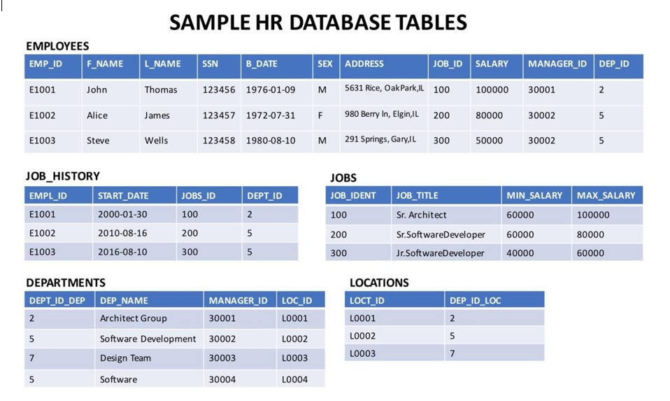
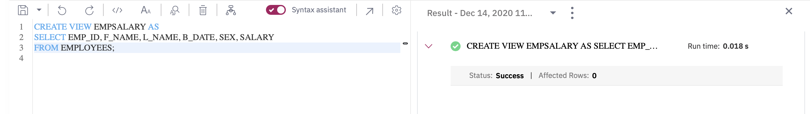
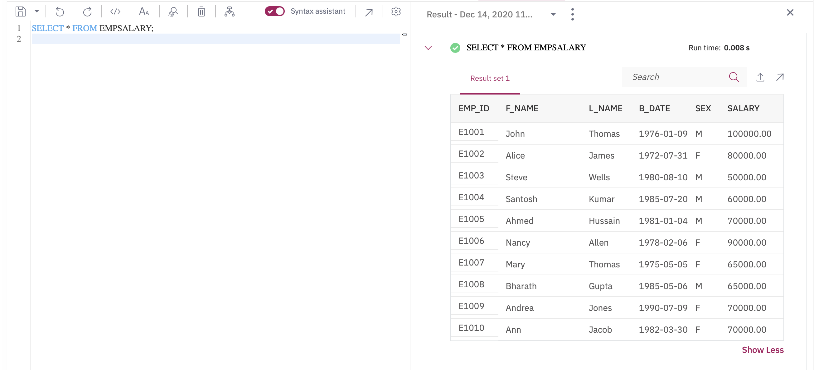
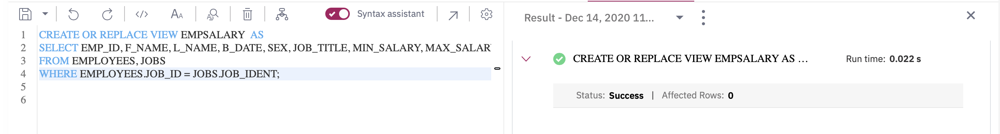
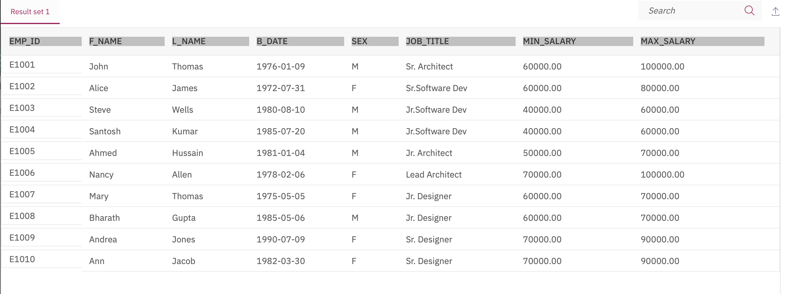
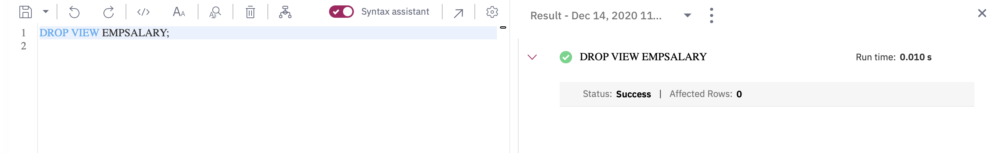
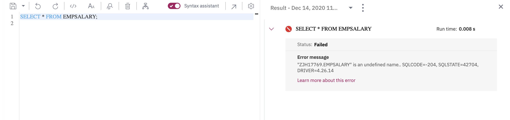

Estimated time needed: 10 minutes
In this lab, you will learn about using views. In SQL, a view is an alternative way of representing data that exists in one or more tables. Just like a real table, it contains rows and columns. The fields in a view are fields from one or more real tables in the database. Though views can be queried like a table, views are dynamic; only the definition of the view is stored, not the data.
How does the syntax of a CREATE VIEW statement look?
pgsql
CREATE VIEW view_name AS
SELECT column1, column2, ...
FROM table_name
WHERE condition;
How does the syntax of a REPLACE VIEW statement look?
pgsql
CREATE OR REPLACE VIEW view_name AS
SELECT column1, column2, ...
FROM table_name
WHERE condition;
How does the syntax of a DROP VIEW statement look?
gauss
DROP VIEW view_name;
In this lab, you will use IBM Db2 Database. Db2 is a Relational Database Management System (RDBMS) from IBM, designed to store, analyze and retrieve the data efficiently.
To complete this lab you will utilize a Db2 database service on IBM Cloud. If you did not already complete this lab task earlier in this module, you will not yet have access to Db2 on IBM Cloud, and you will need to follow the lab below first:
The database used in this lab is an internal database. You will be working on a sample HR database. This HR database schema consists of 5 tables called EMPLOYEES, JOB_HISTORY, JOBS, DEPARTMENTS and LOCATIONS. Each table has a few rows of sample data. The following diagram shows the tables for the HR database:
NOTE: This lab requires you to have all 5 of these tables of the HR database populated with sample data on Db2. If you don't have the tables above populated with sample data on Db2, please go through the lab below first:
After completing this lab, you will be able to:
When you approach the exercises in this lab, follow the instructions to run the queries on Db2:
Go to the Resource List of IBM Cloud by logging in where you can find the Db2 service instance that you created in a previous lab under Services section. Click on the Db2-xx service. Next, open the Db2 Console by clicking on Open Console button. Click on the 3-bar menu icon in the top left corner and go to the Run SQL page. The Run SQL tool enables you to run SQL statements.
In this exercise, you will create a View and show a selection of data for a given table.
Let's create a view called EMPSALARY to display salary along with some basic sensitive data of employees from the HR database. To create the EMPSALARY view from the EMPLOYEES table, copy the code below and paste it to the textbox of the Run SQL page. Click Run all.
n1ql
CREATE VIEW EMPSALARY AS
SELECT EMP_ID, F_NAME, L_NAME, B_DATE, SEX, SALARY
FROM EMPLOYEES;

Using SELECT, query the EMPSALARY view to retrieve all the records. Copy the code below and paste it to the textbox of the Run SQL page. Click Run all.
n1ql
SELECT * FROM EMPSALARY;

In this exercise, you will update a View to combine two or more tables in meaningful ways.
It now seems that the EMPSALARY view we created in exercise 1 doesn't contain enough salary information, such as max/min salary and the job title of the employees. Let's update the EMPSALARY view:
Copy the code below and paste it to the textbox of the Run SQL page. Click Run all.
n1ql
CREATE OR REPLACE VIEW EMPSALARY AS
SELECT EMP_ID, F_NAME, L_NAME, B_DATE, SEX, JOB_TITLE, MIN_SALARY, MAX_SALARY
FROM EMPLOYEES, JOBS
WHERE EMPLOYEES.JOB_ID = JOBS.JOB_IDENT;
NOTE: Don't worry if you don't understand how to combine to two tables using implicit inner join. You will learn more about joins later on. For now, just think you are combining the data of two different tables, EMPLOYEES and JOBS by connecting their respective columns JOB_ID and JOB_IDENT since both the columns contain common unique data. You can have a look at the diagram (at the beginning of the lab) showing the tables for the HR database to observe how the JOB_ID and JOB_IDENT columns from the EMPLOYEES and JOBS tables respectively contain common unique data.
Using SELECT, query the updated EMPSALARY view to retrieve all the records. Copy the code below and paste it to the textbox of the Run SQL page. Click Run all.
n1ql
SELECT * FROM EMPSALARY;

In this exercise, you will drop a created View.
Let's delete the created EMPSALARY view. Copy the code below and paste it to the textbox of the Run SQL page. Click Run all.
gauss
DROP VIEW EMPSALARY;

Using SELECT, you can verify whether the EMPSALARY view has been deleted or not. Copy the code below and paste it to the textbox of the Run SQL page. Click Run all.
n1ql
SELECT * FROM EMPSALARY;

| Date | Version | Changed by | Change Description |
|---|---|---|---|
| 2020-12-24 | 1.1 | Steve Ryan | ID reviewed |
| 2020-12-14 | 1.0 | Sandip Saha Joy | Created initial version |